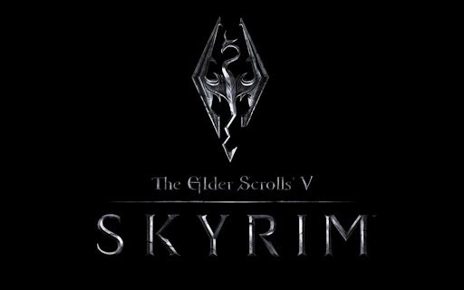

Sobre mí
¡Hola! Soy Cristian R. Descosido, un apasionado desarrollador web en formación. Me encanta crear soluciones digitales eficientes y atractivas. Mi misión es combinar la tecnología y la creatividad para construir experiencias web memorables.
Proyectos Destacados
Habilidades y Hobbies
Tecnologías Dominadas
- HTML5
- CSS3
- JavaScript
- Bases de Datos SQL
Tecnologías por Aprender
- React
- Node.js
- Cloud Computing
Hobbies
- Kick Boxing
- Crossfit
- Motociclismo
Contacto
Mis Juegos Favoritos
Elden Ring

Uno de los juegos más completos que jugué en mi vida, historia, mundo abierto, arte, dificultad épicamente logradas.
Elder Scroll 5: Skyrim
Fué el juego que me hizo descubrir el mundo abierto, cientos de horas gastadas en side-quests.
Stalker: Call of Pripyat

Juego adictivo en el que tenes que sobrevivir en zona hostil llena de radiación, anomalías, mutantes y soldados.